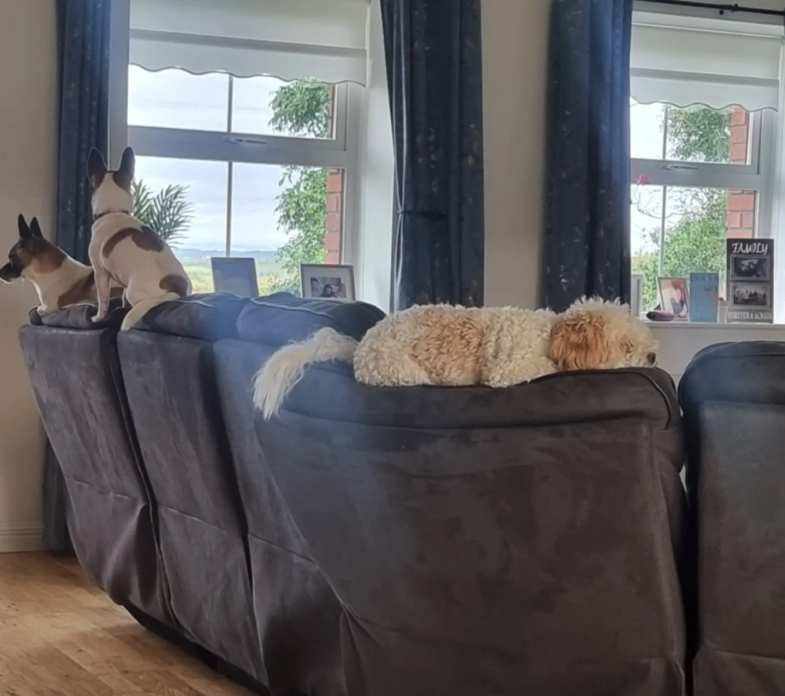
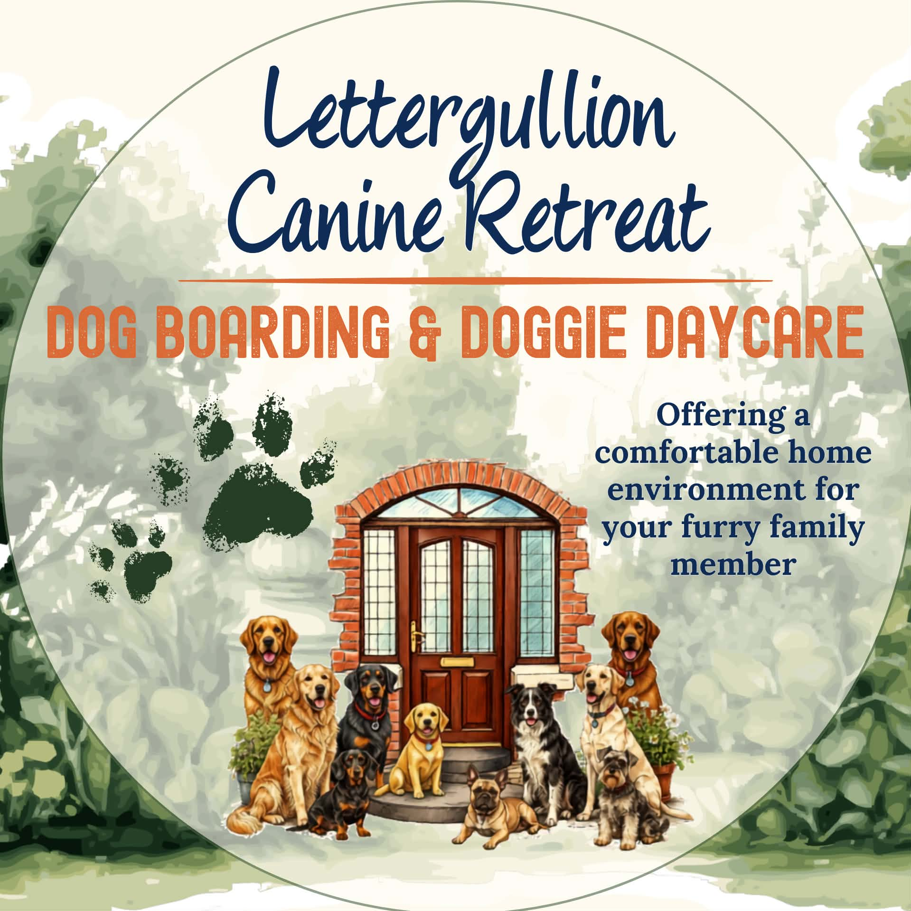
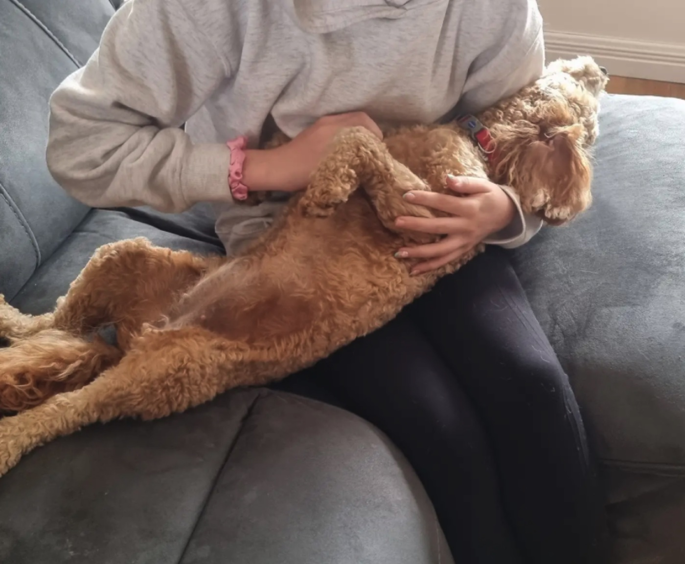
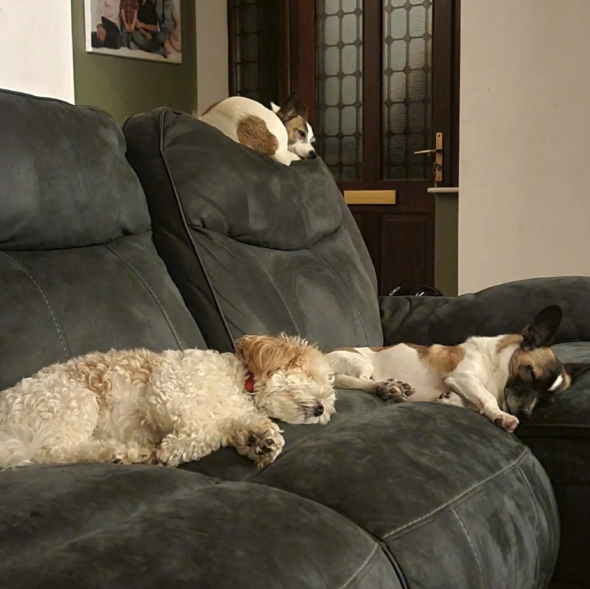
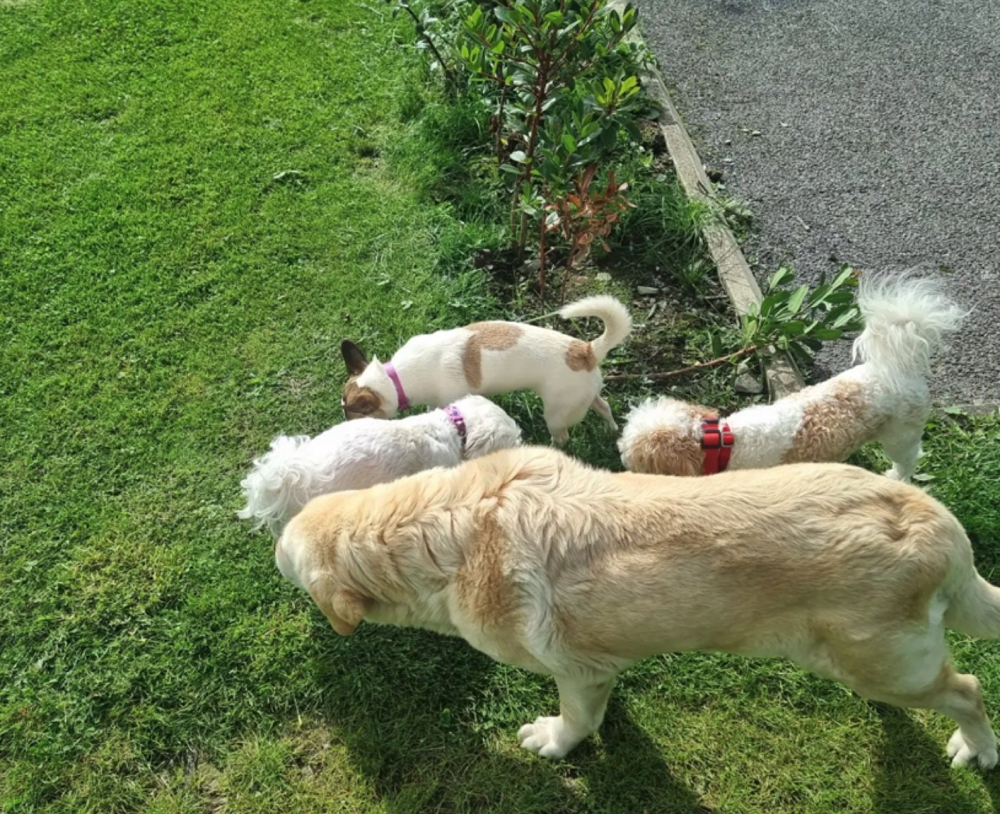
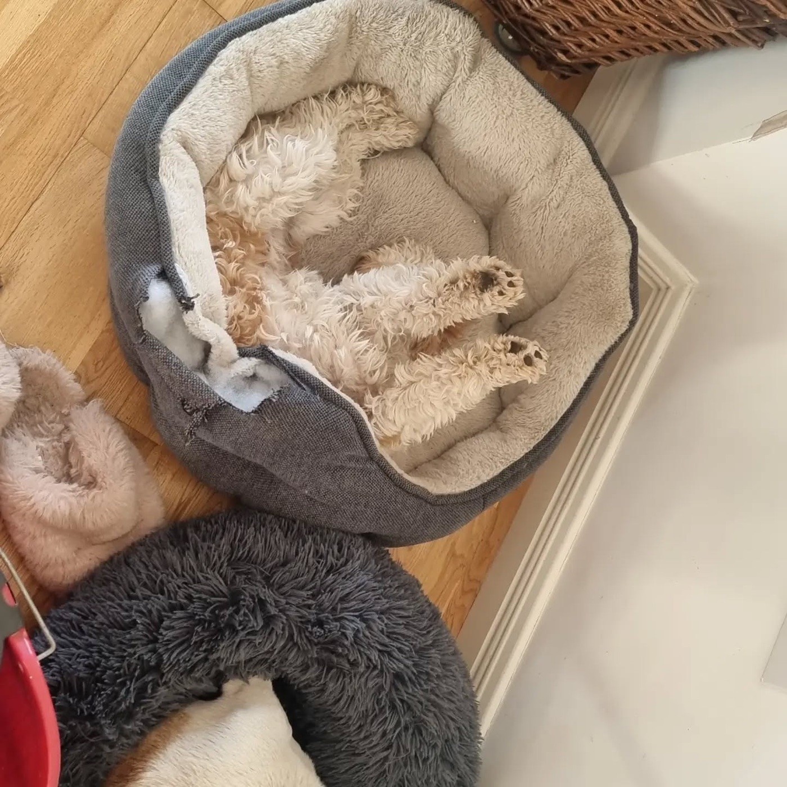
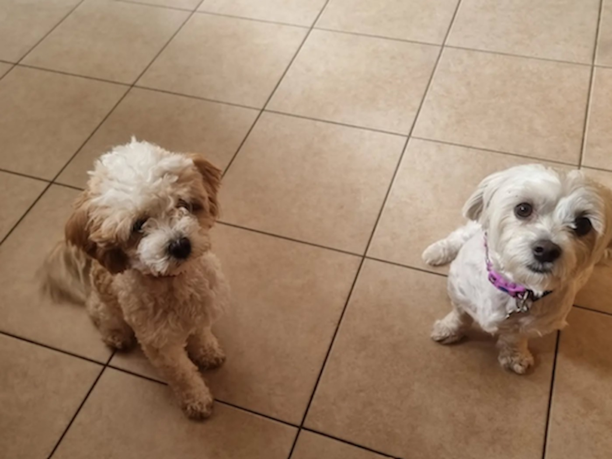
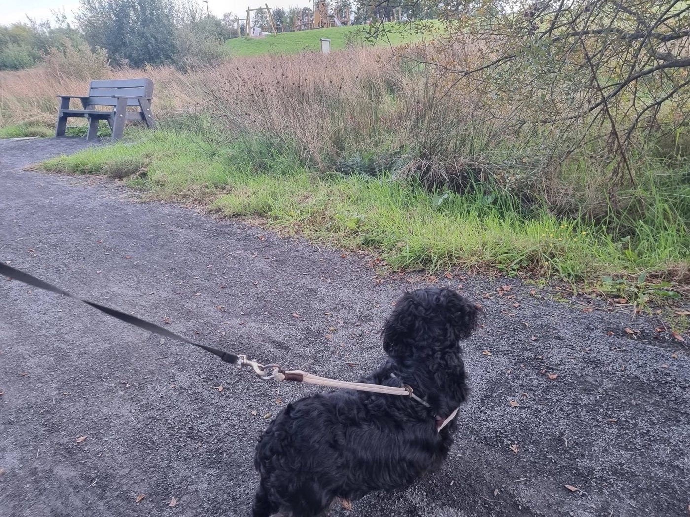

Lettergullion Canine Retreat · Co. Longford
Home boarding for small dogsin Ballinamuck.
A welcoming home from home for your much-loved dog. Libbie takes time to understand what helps each guest feel comfortable, happy and at ease.


Peace of mind
Leaving your dog with someone new is a big decision.
Going away should be something to look forward to—not something spent worrying about your dog.
That is why this site introduces Libbie properly, shows you the real home and explains how a stay works. You can decide whether Lettergullion feels right before starting a conversation.

Meet Libbie
Hi, I’m Libbie.
I’m a real animal lover, and for years I’ve wanted to offer dogs a proper home from home when their owners are away.
I know how difficult it can be to leave your dog with someone else. I want you to feel comfortable asking questions and telling me about your dog’s personality, routine and what helps them settle.
I have four dogs of my own—Marley, Toby, Taylor and Daisy—so dogs are very much part of everyday life in our home.
Around the home
A comfortable place for small dogs to stay.
This is the house, garden and countryside that become part of your dog’s stay—a relaxed domestic setting with room to rest, potter about and enjoy some fresh air.

Comfortable places to settle.
The photographs show dogs relaxing together in the living space, with sofas and cosy places to rest.

A quiet country setting.
The garden gives small dogs space for fresh air, gentle play and unhurried time outside, with the Longford countryside just beyond the gate.



Before a stay
Every dog is different.
A good stay starts with the right match. Libbie gets to know each dog’s personality, routine and home comforts first, then plans how they will settle alongside the four resident dogs.
Tell Libbie about your dog
Share their name, age, approximate size, usual routine and how they are with other dogs.
Send the dates you need
Let Libbie know when you are going away and how long you expect your dog to stay.
Meet before they stay
A first meeting gives your dog time to meet Libbie and helps everyone talk through meals, sleeping, introductions and the little habits that help them settle.
Boarding
Home boarding for small dogs.
Libbie keeps the service personal and home based, so each guest’s food, sleep, exercise, medication and favourite comforts can be understood before they arrive.
Living and sleeping indoors
Guest dogs share the home rather than staying in an outdoor kennel block. Sleeping arrangements are agreed around where your dog normally feels comfortable and settles best.
Company, freedom and familiar routines
Dogs have company throughout the day, freedom to potter around the living spaces and regular garden time. Meals, rest, play and affection follow their individual needs as closely as possible.
Updates from Libbie
Libbie keeps in touch through WhatsApp and can share photographs so you can see how your dog is settling into life at Lettergullion.
Doggie day care
Day care can be arranged for small dogs who are comfortable in the home setting. Send the days you need along with a little about your dog.
Check dates with LibbieCommon questions
A few things you may want to know.
If your question is not covered below, contact Libbie and she can talk it through with you.
Where will my dog sleep?
Dogs sleep inside the home. Libbie will agree the best arrangement with you beforehand, based on where your dog normally sleeps and what helps them settle.
Will we meet before the first stay?
Yes. A first meeting lets your dog meet Libbie, helps everyone discuss their routine and gives Libbie a chance to plan introductions with the resident dogs.
Will I receive updates?
Libbie keeps in touch through WhatsApp and can send photographs during the stay, so you can see how your dog is getting on.
Do you offer doggie day care?
Day care can be arranged for suitable small dogs. Send Libbie the days you need and some information about your dog’s routine and temperament.
How do I check dates and prices?
Message, call or email Libbie with your preferred dates and a little about your dog. She will let you know if the dates are available and tell you the current price.
Get in touch
Would you like to ask about a stay?
Send Libbie your dates and a little about your dog. She will get back to you about availability and the next steps.
Find Lettergullion
Ballinamuck,
County Longford
LettergullionBallinamuck
Co. Longford
N39 VP80Open directions